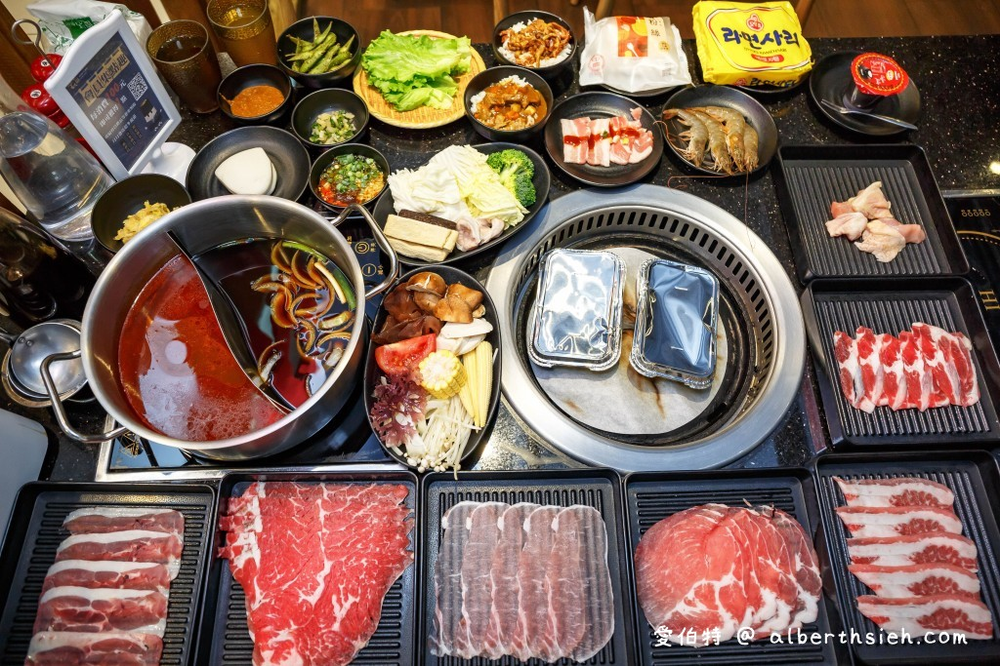

【大鋤理念】
日本飲食文化的多樣性一直讓各國人沉醉其中，從北到南的食材應用方式又各有特色！ 其中最著名的莫過於壽喜燒，最具日本飲食文化代表。
小蒙牛餐飲集團旗下品牌－金大鋤壽喜燒，打造全新的日式壽喜燒餐飲體驗， 平價消費，奢華饗宴。 完美的搭配，走入每一個消費者的生活中，貼近消費大眾。
金大鋤壽喜燒強調，除了高品質肉品外，同樣注重在蔬菜的嚴選、副食的搭配、飲品的特調， 打破壽喜燒只是吃肉的刻板印象，美味不膩能吃到食材真正的精髓。
地址：
桃園市中壢區中正路51號3樓(Jc Park食尚廣場)。
| 食べ放題価格表 | |||
|---|---|---|---|
| Aセット | Bセット | Cセット | |
| おとな | 399元 | 459元 | 519元 |
| 年寄り | 349元 | 409元 | 469元 |
| 子供 | 200元 | 230元 | 260元 |